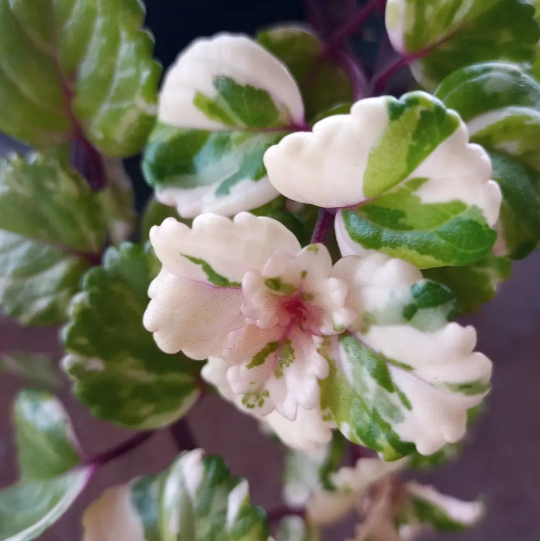
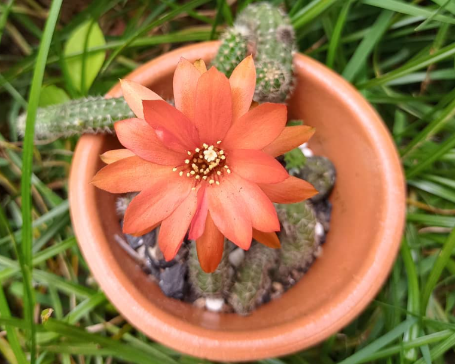
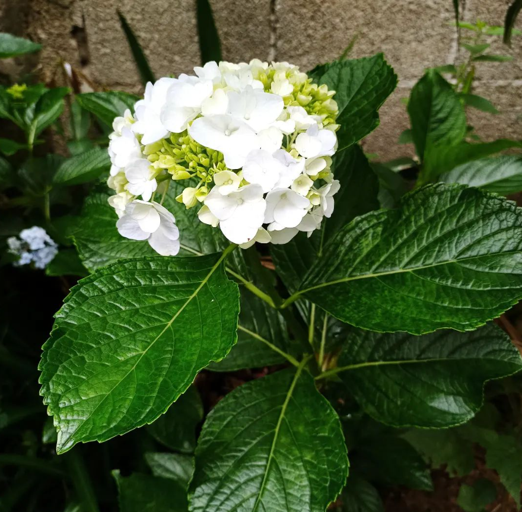
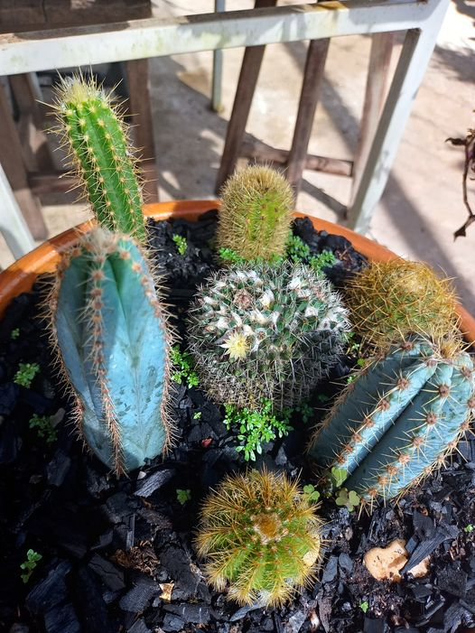
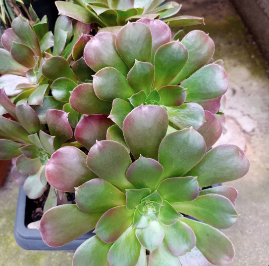
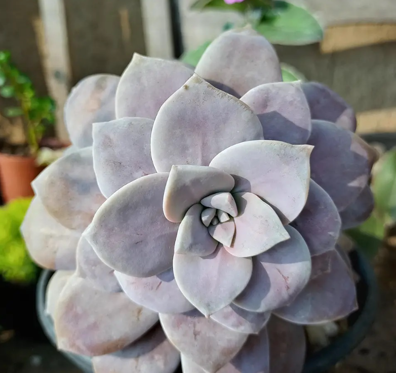
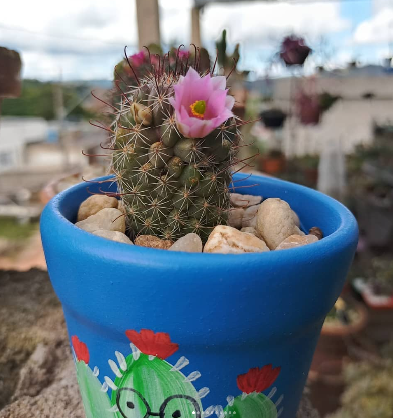
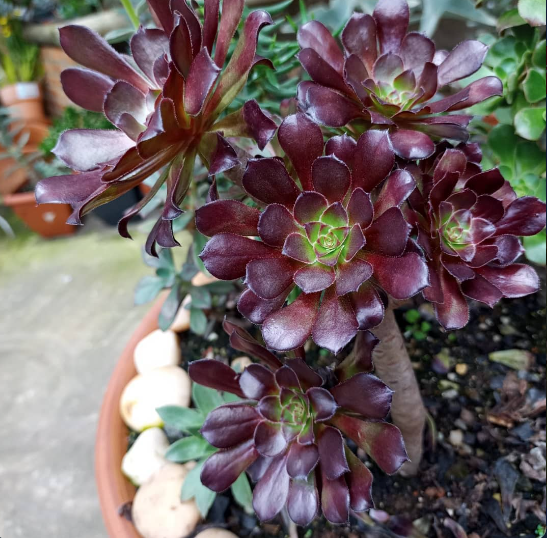
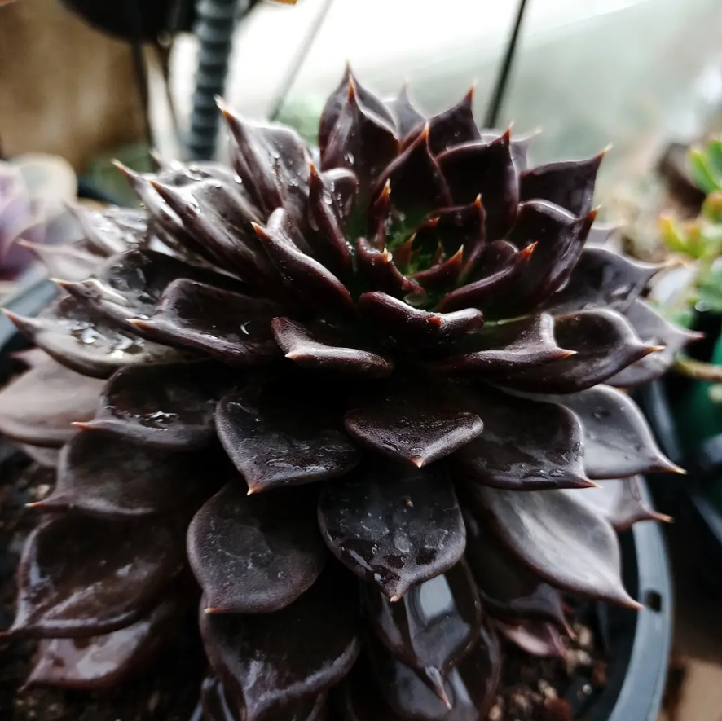
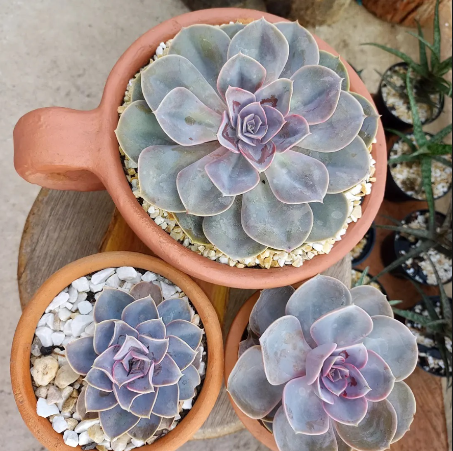

Flores da Estação
Flores da estação são aquelas que florescem em períodos específicos do ano, adaptadas às condições climáticas de cada estação. Elas não apenas embelezam jardins e paisagens, mas também desempenham um papel crucial no ecossistema, atraindo polinizadores como abelhas, borboletas e pássaros. Cada estação traz uma variedade única de flores que contribuem para a biodiversidade e o equilíbrio ecológico.
O equilíbrio ecológico é mantido por meio da interdependência entre as flores da estação e os polinizadores. Cada estação cria um ciclo contínuo de vida e renovação. As flores fornecem os recursos necessários para os polinizadores, que, em troca, garantem a reprodução das plantas. Esse ciclo sustentado contribui para a estabilidade dos ecossistemas, permitindo que diversas espécies de plantas e animais coexistam e prosperem.
Culturalmente, as flores da estação têm grande impacto. Elas estão presentes em festividades e rituais em várias culturas ao redor do mundo. Flores de primavera, como os narcisos, são muitas vezes associadas a festivais de renovação e esperança. No outono, flores como os crisântemos são usadas em celebrações de gratidão e colheita. Além disso, a estética das flores da estação embeleza o ambiente urbano e rural, melhorando a qualidade de vida das pessoas ao proporcionar um contato visual constante com a natureza.
  
 
Primavera
A primavera é a estação mais associada às flores. Com o aumento da temperatura e a maior incidência de luz solar, muitas plantas entram em seu período de floração. Entre as flores mais comuns da primavera estão as tulipas, margaridas, narcisos, e jacintos. Essas flores são conhecidas por suas cores vibrantes e perfumes marcantes, simbolizando renascimento e renovação.
Verão
No verão, as temperaturas mais altas e os dias mais longos favorecem flores como girassóis, lírios, rosas e lavandas. Essas flores costumam ser mais resistentes ao calor e possuem cores intensas que se destacam sob o sol forte. Além de decorar jardins, muitas dessas flores são usadas em arranjos florais para celebrações e eventos ao ar livre.
 

Outono
O outono traz uma paleta de cores mais quentes, com flores que refletem os tons da estação, como crisântemos, dálias e ásteres. Essas flores são adaptadas para suportar as temperaturas mais amenas e as mudanças de luz. Elas continuam a atrair polinizadores e adicionam uma beleza serena aos jardins que começam a se preparar para o inverno.
Inverno
Embora seja a estação mais fria e menos propícia à floração, o inverno ainda oferece flores que conseguem sobreviver às baixas temperaturas. Entre elas estão os heléboros, também conhecidos como rosas do Natal, e as camélias. Essas flores adicionam um toque de cor e vida aos jardins durante os meses mais escuros e frios do ano.
 